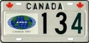
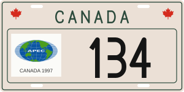
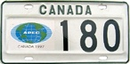
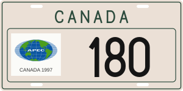
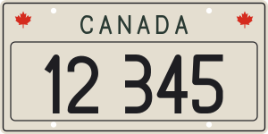

CANADA 134 · Red maple leaves beside CANADA


Canada · Federal plate · B.C. · APEC events · Original source
The photographed No. 134 has red maple leaves beside CANADA. BCpl8s explicitly distinguishes this from the leafless 180 and 149 plates. Both APEC versions now use the same CANADA shell, raised serial panel, header and serial candidate as the federal standard plate; mounts and APEC sticker/number placement are separate variant settings.
These are individual maple leaves rather than rectangular flags. The number range is unknown. The small No. 134 photograph supports layout and decoration, but cannot establish exact font contours, dimensions or identical historical tooling. The sticker and lettering remain approximate.


Canada · Federal plate · B.C. · APEC events · Original source


Canada · Federal plate · B.C. · APEC events · Original source

BCpl8s · APEC source article · Source hashes and variant record